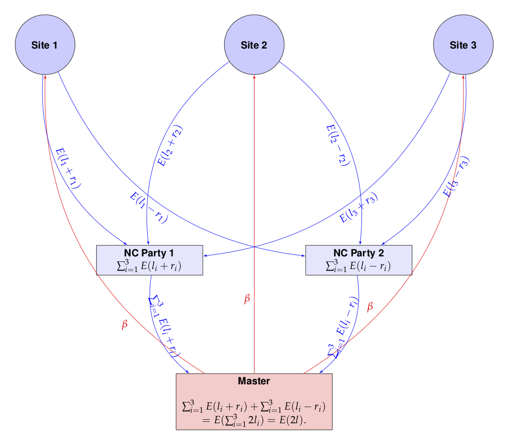
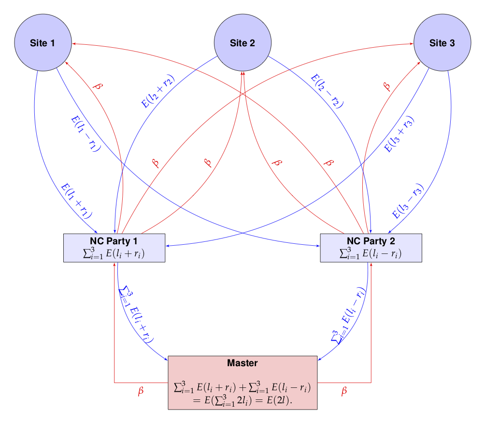

vignettes/DHCoxNCP.Rmd
DHCoxNCP.RmdIt is only a short way from the toy MLE example to a more useful example using Cox regression.
But first, we need the survival package and the
homomopheR package.
if (!require("survival")) {
stop("this vignette requires the survival package")
}
library(homomorpheR)We generate some simulated data for the purpose of this example. We will have three sites each with patient data (sizes 1000, 500 and 1500) respectively, containing
sex (0, 1) for male/femaleage between 40 and 70bm
time to some event of interestevent which is 1 if an event was observed
and 0 otherwise.It is common to fit stratified models using sites as strata since the
patient characteristics usually differ from site to site. So the
baseline hazards (lambdaT) are different for each site but
they share common coefficients (beta.1, beta.2
and beta.3 for age, sex and
bm respy.) for the model. See (Terry
M. Therneau and Patricia M. Grambsch 2000) by Therneau and
Grambsch for details. So our model for each site \(i\) is
\[ S(t, age, sex, bm) = [S_0^i(t)]^{\exp(\beta_1 age + \beta_2 sex + \beta_3 bm)} \]
sampleSize <- c(n1 = 1000, n2 = 500, n3 = 1500)
set.seed(12345)
beta.1 <- -.015; beta.2 <- .2; beta.3 <- .001;
lambdaT <- c(5, 4, 3)
lambdaC <- 2
coxData <- lapply(seq_along(sampleSize),
function(i) {
sex <- sample(c(0, 1), size = sampleSize[i], replace = TRUE)
age <- sample(40:70, size = sampleSize[i], replace = TRUE)
bm <- rnorm(sampleSize[i])
trueTime <- rweibull(sampleSize[i],
shape = 1,
scale = lambdaT[i] * exp(beta.1 * age + beta.2 * sex + beta.3 * bm ))
censoringTime <- rweibull(sampleSize[i],
shape = 1,
scale = lambdaC)
time <- pmin(trueTime, censoringTime)
event <- (time == trueTime)
data.frame(stratum = i,
sex = sex,
age = age,
bm = bm,
time = time,
event = event)
})So here is a summary of the data for the three sites.
str(coxData[[1]])## 'data.frame': 1000 obs. of 6 variables:
## $ stratum: int 1 1 1 1 1 1 1 1 1 1 ...
## $ sex : num 1 0 1 1 1 1 1 0 0 1 ...
## $ age : int 47 69 70 47 41 51 59 45 43 69 ...
## $ bm : num -0.516 -1.375 1.01 0.454 0.275 ...
## $ time : num 1.37 0.95 2.35 2.48 1.93 ...
## $ event : logi FALSE TRUE TRUE TRUE FALSE FALSE ...
str(coxData[[2]])## 'data.frame': 500 obs. of 6 variables:
## $ stratum: int 2 2 2 2 2 2 2 2 2 2 ...
## $ sex : num 0 1 0 1 1 1 0 1 1 1 ...
## $ age : int 54 63 53 70 40 57 48 54 63 47 ...
## $ bm : num -0.3243 0.2531 0.0464 0.8149 -0.1921 ...
## $ time : num 1.10483 0.34804 0.01602 0.68249 0.00157 ...
## $ event : logi FALSE FALSE TRUE TRUE FALSE TRUE ...
str(coxData[[3]])## 'data.frame': 1500 obs. of 6 variables:
## $ stratum: int 3 3 3 3 3 3 3 3 3 3 ...
## $ sex : num 1 0 0 1 1 1 0 1 0 1 ...
## $ age : int 55 70 49 60 44 42 58 62 61 68 ...
## $ bm : num -0.9554 0.8138 0.0425 -1.2272 0.3244 ...
## $ time : num 0.0733 1.9869 2.2946 0.1231 1.0602 ...
## $ event : logi TRUE FALSE FALSE TRUE FALSE FALSE ...If the data were all aggregated in one place, it would very simple to fit the model. Below, we row-bind the data from the three sites.
aggModel <- coxph(formula = Surv(time, event) ~ sex +
age + bm + strata(stratum),
data = do.call(rbind, coxData))
aggModel## Call:
## coxph(formula = Surv(time, event) ~ sex + age + bm + strata(stratum),
## data = do.call(rbind, coxData))
##
## coef exp(coef) se(coef) z p
## sex -0.160493 0.851723 0.050627 -3.170 0.00152
## age 0.010057 1.010108 0.002835 3.547 0.00039
## bm -0.005989 0.994029 0.025208 -0.238 0.81222
##
## Likelihood ratio test=22.82 on 3 df, p=4.413e-05
## n= 3000, number of events= 1575Here age and sex are significant, but
bm is not. The estimates \(\hat{\beta}\) are
(-0.180, .020, .007).
We can also print out the value of the (partial) log-likelihood at the MLE.
aggModel$loglik## [1] -9534.495 -9523.087The first is the value at the initial parameter value
(0, 0, 0) and the second is the value at the MLE.
Assume now that the data coxData is distributed between
three sites none of whom want to share actual data among each other or
even with a master computation process. They wish to keep their data
secret but are willing, together, to provide the sum of their local
negative log-likelihoods. They wish to do this in a manner so that the
master process is unable to associate the contribution to the
likelihood from each site.
The overall likelihood function \(l(\beta)\) for the entire data is the sum of the likelihoods at each site: \(l(\beta) = l_1(\beta)+l_2(\beta)+l_3(\beta).\) How can this likelihood be computed while preventing the master from knowing the individual contributions of each site?
The key to ensuring that each site will not reveal the actual value \(l_i(\beta)\) for any \(\beta\) involves the use of two non-cooperating parties, say, NCP1 and NCP2. Site \(i\) sends \(E(l_i(\beta) + r_i)\) to NCP1 and \(E(l_i(\beta) - r_i)\) to NCP2, where \(E(x)\) denotes the encrypted value of \(x\) and \(r_i\) is a random quantity generated anew for each site and each \(\beta\). NCP1 can compute \(\sum_{i=1}^3E(l_i + r_i)\) and NCP2 can compute \(\sum_{i=1}^3E(l_i - r_i)\), but individually, neither has a handle on \(l = \sum_{i=1}^3 l_i\).
The master process can retrieve \(\sum_{i=1}^3E(l_i + r_i)\) and \(\sum_{i=1}^3E(l_i - r_i)\) from NCP1 and NCP2 respectively. Each is an encrypted value of the sum of the likelihood contributions from all sites, obfuscated by a random term, and hence is random to the master. However, the master using the associative and homomorphic properties of \(E(.)\), can compute:
\[ \sum_{i=1}^3E(l_i + r_i) +\sum_{i=1}^3E(l_i - r_i) = \sum_{i=1}^3E(l_i + r_i + l_i - r_i) = \sum_{i=1}^3E(2l_i) = E(2l) \]
since \(l = l_1 + l_2 + l_3\). The master can now decrypt the result and obtain \(2l\)!
This is pictorially shown below.

The red arrows show the master proposing a value \(\beta\) to each of the sites, which reply back to NCP1 and NCP2. The master then retrieves the values from NCP1 and NCP2 and sums them.
The drawback of the above scheme is that channels of communication have to be established from each site to the master process and also to the two non-cooperating parties NCP1 and NCP2. If the number of participating sites in a computation changes, then both the master and NCP1 and NCP2 have to be made aware of the change.
It would be simpler if only NCP1 and NCP2 can talk to both the master and the sites. Such a situation would arise, for example, when the sites are all participating in a disease specific registry. The parties NCP1 and NCP2 would probably be set up once and any new site that has to be onboarded needs only to be known to P1 and P2. This has the added advantage of hiding the number of sites, which could even be 1!
Such a communication topology would mean that the \(\beta\) values have be funneled to the sites through NCP1 and NCP2 and that can be easily accomplished. The picture below shows this configuration and looks more complicated than it actually is.

To summarize, the modified scheme has several characteristics:
The above implementation assumes that the encryption and decryption can happen with real numbers which is not the actual situation. Instead, we use rational approximations using a large denominator, \(2^{256}\), say. In the future, of course, we need to build an actual library is built with rigorous algorithms guaranteeing precision and overflow/undeflow detection. For now, this is just an ad hoc implementation.
Also, since we are only using homomorphic additive properties, a partial homomorphic scheme such as the Paillier Encryption system will be sufficient for our computations.
We define classes to encapsulate our sites, non-cooperating parties and a master process.
Our site class will compute the partial log likelihood on site data
given a parameter \(\beta\). Note how
the private nll method takes care to split the result into
an integer and fractional part while performing the arithmetic
operations. (The latter is approximated by a rational number.)
In the code below, we exploit a feature of coxph: a
control parameter can be passed to evaluate the partial likelihood at a
given \(\beta\) value. We also use a
cache so that we can distribute each piece of the encrypted likelihood
\(E(l_i - r_i)\) and \(E(l_i + r_i)\) to the two non-cooperating
parties.
Site <-
R6::R6Class(
"Site",
private = list(
## name of the site
name = NA,
## local data
data = NA,
## Control variable for cox regression
cph.control = NA,
beta_cache = list(),
local_nll = function(beta) {
## Check if value is cached
beta_hash <- paste0("b", digest::digest(beta, algo = "xxhash64"))
result <- private$beta_cache[[beta_hash]]
if (is.null(result)) {
## We're worker, so compute local negative log likelihood
nllValue <- tryCatch({
m <- coxph(formula = Surv(time, event) ~ sex + age + bm,
data = private$data,
init = beta,
control = private$cph.control)
-(m$loglik[1])
},
error = function(e) NA)
if (!is.na(nllValue)) {
pubkey <- self$pubkey
## Generate random offset for int and frac parts
offset <- list(int = random.bigz(nBits = 256),
frac = random.bigz(nBits = 256))
## 2. Add to neg log likelihood
result.int <- floor(nllValue)
result.frac <- nllValue - result.int
## Approximate fractional part by a rational
result.fracnum <- gmp::as.bigz(gmp::numerator(gmp::as.bigq(result.frac) * self$den))
result <- list(
int1 = pubkey$encrypt(result.int - offset$int),
frac1 = pubkey$encrypt(result.fracnum - offset$frac),
int2 = pubkey$encrypt(result.int + offset$int),
frac2 = pubkey$encrypt(result.fracnum + offset$frac)
)
private$beta_cache[[beta_hash]] <- result
} else {
result <- list(int1 = NA, frac1 = NA, int2 = NA, frac2 = NA)
}
}
result
}
),
public = list(
count = NA,
## Common denominator for approximate real arithmetic
den = NA,
## The master's public key; everyone has this
pubkey = NA,
initialize = function(name, data) {
private$name <- name
private$data <- data
private$cph.control <- replace(coxph.control(), "iter.max", 0)
},
setPublicKey = function(pubkey) {
self$pubkey <- pubkey
},
setDenominator = function(den) {
self$den = den
},
## neg log lik,
nll = function(beta, party) {
result <- private$local_nll(beta)
if (party == 1) {
list(int = result$int1, frac = result$frac1)
} else {
list(int = result$int2, frac = result$frac2)
}
}
)
)The non-cooperating parties can communicate with the sites. So they
have methods for adding sites, passing on public keys from the master
etc. The nll method for this class merely calls each site
to compute the result and adds them up before sending it on to the
master, so that the master has no idea of the individual
contributions.
NCParty <-
R6::R6Class(
"NCParty",
private = list(
## name of the site
name = NA,
## NC party number
number = NA,
## The master
master = NA,
## The sites
sites = list()
),
public = list(
## The master's public key; everyone has this
pubkey = NA,
## The denoinator for rational arithmetic
den = NA,
initialize = function(name, number) {
private$name <- name
private$number <- number
},
setPublicKey = function(pubkey) {
self$pubkey <- pubkey
## Propagate to sites
for (site in sites) {
site$setPublicKey(pubkey)
}
},
setDenominator = function(den) {
self$den <- den
## Propagate to sites
for (site in sites) {
site$setDenominator(den)
}
},
addSite = function(site) {
private$sites <- c(private$sites, list(site))
},
## neg log lik
nll = function(beta) {
pubkey <- self$pubkey
results <- lapply(sites, function(x) x$nll(beta, private$number))
## Accumulate the integer and fractional parts
n <- length(results)
sumInt <- results[[1L]]$int
sumFrac <- results[[1L]]$frac
for (i in 2:n) {
sumInt <- pubkey$add(sumInt, results[[i]]$int)
sumFrac <- pubkey$add(sumFrac, results[[i]]$frac)
}
list(int = sumInt, frac = sumFrac)
}
)
)The master process
Master <-
R6::R6Class(
"Master",
private = list(
## name of the site
name = NA,
## Private and public keys
keys = NA,
## Non cooperating party 1
nc_party_1 = NA,
## Non cooperating party 2
nc_party_2 = NA
),
public = list(
## Denominator for rational arithmetic
den = NA,
initialize = function(name) {
private$name <- name
private$keys <- PaillierKeyPair$new(1024) ## Generate new public and private key.
self$den <- gmp::as.bigq(2)^256 #Our denominator for rational approximations
},
setNCParty1 = function(site) {
private$nc_party_1 <- site
private$nc_party_1$setPublicKey(private$keys$pubkey)
private$nc_party_1$setDenominator(self$den)
},
setNCParty2 = function(site) {
private$nc_party_2 <- site
private$nc_party_2$setPublicKey(private$keys$pubkey)
private$nc_party_2$setDenominator(self$den)
},
## neg log lik
nLL = function(beta) {
pubkey <- private$keys$pubkey
privkey <- private$keys$getPrivateKey()
result1 <- private$nc_party_1$nll(beta)
result2 <- private$nc_party_2$nll(beta)
## Accumulate the integer and fractional parts
sumInt <- pubkey$add(result1$int, result2$int)
sumFrac <- pubkey$add(result1$frac, result2$frac)
intResult <- as.double(privkey$decrypt(sumInt))
fracResult <- as.double(gmp::as.bigq(privkey$decrypt(sumFrac)) / self$den)
## Since we 2L, we divide by 2.
(intResult + fracResult) / 2.0
}
)
)We are now ready to use our sites in the computation.
site1 <- Site$new(name = "Site 1", data = coxData[[1]])
site2 <- Site$new(name = "Site 2", data = coxData[[2]])
site3 <- Site$new(name = "Site 3", data = coxData[[3]])
sites <- list(site1 = site1, site2 = site2, site3 = site3)
ncp1 <- NCParty$new("NCP1", 1)
ncp2 <- NCParty$new("NCP1", 2)We add sites to the non-cooperating parties.
for (s in sites) {
ncp1$addSite(s)
ncp2$addSite(s)
}
master <- Master$new("Master")We next connect the master to the non-cooperating parties.
master$setNCParty1(ncp1)
master$setNCParty2(ncp2)At this point the communication graph has been defined between the master and non-cooperating parties and the non-cooperating parties and the sites.
The summary will show the results.
summary(fit)## Maximum likelihood estimation
##
## Call:
## mle(minuslogl = nll, start = list(age = 0, sex = 0, bm = 0))
##
## Coefficients:
## Estimate Std. Error
## age -0.160493329 0.050626611
## sex 0.010057265 0.002835374
## bm -0.005988214 0.025208370
##
## -2 log L: 19046.17Note how the estimated coefficients and standard errors closely match the full model summary below.
summary(aggModel)## Call:
## coxph(formula = Surv(time, event) ~ sex + age + bm + strata(stratum),
## data = do.call(rbind, coxData))
##
## n= 3000, number of events= 1575
##
## coef exp(coef) se(coef) z Pr(>|z|)
## sex -0.160493 0.851723 0.050627 -3.170 0.00152 **
## age 0.010057 1.010108 0.002835 3.547 0.00039 ***
## bm -0.005989 0.994029 0.025208 -0.238 0.81222
## ---
## Signif. codes: 0 '***' 0.001 '**' 0.01 '*' 0.05 '.' 0.1 ' ' 1
##
## exp(coef) exp(-coef) lower .95 upper .95
## sex 0.8517 1.174 0.7713 0.9406
## age 1.0101 0.990 1.0045 1.0157
## bm 0.9940 1.006 0.9461 1.0444
##
## Concordance= 0.536 (se = 0.009 )
## Likelihood ratio test= 22.82 on 3 df, p=4e-05
## Wald test = 22.81 on 3 df, p=4e-05
## Score (logrank) test = 22.85 on 3 df, p=4e-05And the log likelihood of the distributed homomorphic fit also matches that of the model on aggregated data:
## logLik(MLE fit): -9523.087001, logLik(Agg. fit): -9523.087001.